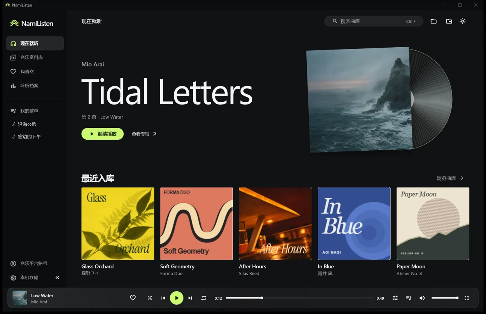
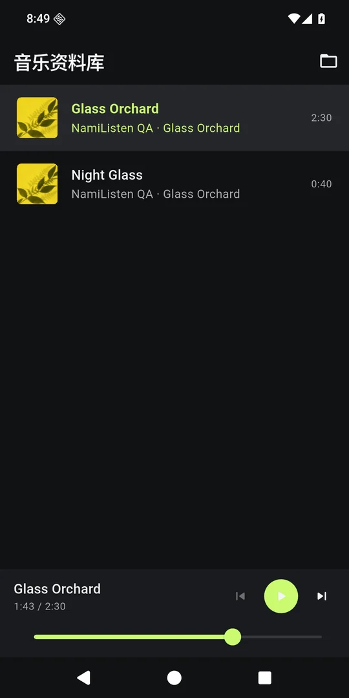

Windows
Windows x64
按专辑、曲目或文件夹浏览，给喜欢的歌排个顺序。全屏播放时可以查看同步歌词。


Windows x64
按专辑、曲目或文件夹浏览，给喜欢的歌排个顺序。全屏播放时可以查看同步歌词。

Android 7.0 及以上
选择手机上的音乐文件夹开始播放。锁屏后可用系统媒体控件切歌，重开应用可继续上次的进度。

0.1.0 正在进行发布前测试。正式安装包将在 GitHub Releases 提供。